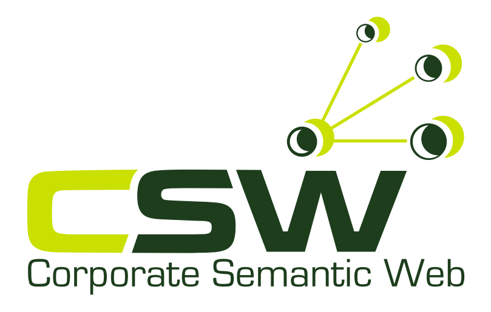

<!DOCTYPE HTML PUBLIC "-//W3C//DTD XHTML 1.0 Transitional//EN" "http://www.w3.org/TR/xhtml1/DTD/xhtml1-transitional.dtd">
<html class="js" id="html-main" dir="ltr" xml:lang="en" xmlns="http://www.w3.org/1999/xhtml" lang="en"><head> 


<meta http-equiv="Content-Type" content="text/html; charset=UTF-8">
  <title>RuleML 2011 | 5th International Symposium on Rules</title>
  <meta http-equiv="Content-Type" content="text/html; charset=UTF-8">
<link rel="alternate" type="application/rss+xml" title="RuleML 2011 RSS" href="http://www.defeasible.org/ruleml2011/rss.xml">
<link rel="shortcut icon" href="http://www.defeasible.org/ruleml2011/themes/ruleml/favicon.ico" type="image/x-icon">
  <link type="text/css" rel="stylesheet" media="all" href="index_files/node.css">
<link type="text/css" rel="stylesheet" media="all" href="index_files/defaults.css">
<link type="text/css" rel="stylesheet" media="all" href="index_files/system.css">
<link type="text/css" rel="stylesheet" media="all" href="index_files/system-menus.css">
<link type="text/css" rel="stylesheet" media="all" href="index_files/user.css">
<link type="text/css" rel="stylesheet" media="all" href="index_files/style.css">
<link type="text/css" rel="stylesheet" media="all" href="index_files/local.css">
  <script type="text/javascript" src="index_files/jquery.js"></script>
<script type="text/javascript" src="index_files/drupal.js"></script>
<script type="text/javascript" src="http://localhost:8080/SymposiumPlannerSystem/sps2011.js"
</script> 
</head><body class="body-main georgia" onload="elementSelected()">	
<table align="center" width="1024">
<tr>
<td>	
<!-- / make-it-center -->
<div class="make-it-center">

<div class="top-menu clear-block">

      <span class="mission">The 5th International Symposium on Rules: Research Based and Industry Focused<br>
19-21 July 2011, Barcelona, Spain<br>
Co-located with the <a href="http://ijcai-11.iiia.csic.es/" target="_new">22<sup>nd </sup>International Join Conference on Artificial Intelligence</a></span>
    
  
  <!-- >>>>>>>> REMOVE THIS IF YOU WANT TO GET RID OF TOP LINKS (RSS, LOGIN, REGISTER | PROFILE) start-->  
 
  <div id="top-links">
    <ul class="top-links-ul">
    	
    	<li><a href="http://www.defeasible.org/ruleml2011/user">Log in</a></li>
<!--
      -->
      <!--  
	            <li>
              <a href="/ruleml2011/rss.xml">
              </a>
            </li>
	   
-->	
	</ul>
  </div>

  <!-- <<<<<<<< REMOVE THIS IF YOU WANT TO GET RID OF TOP LINKS (RSS, LOGIN, REGISTER) end -->

</div>


<!-- logo-container - ruleml-->
<div id="logo-container">
<div id="headerImg">

<table>
<tbody><tr valign="middle">
   
    <td id="logoBlock">
      <div id="logo-picture">
        <a href="http://www.defeasible.org/ruleml2011/" title="Home"></a>
      </div>
    </td>
    <td id="portalTitle">
          <div class="title"><a href="http://www.defeasible.org/ruleml2011/" title="Home">
          RuleML 2011</a>
      </div>
      
          <strong class="logo-picture-true">5th International Symposium on Rules</strong>
     
  </td>
</tr>
</tbody></table>

</div> <!-- headerImg -->

<div id="headerimagecopyright">
  <a href="http://creativecommons.org/licenses/by/2.0/deed.en_US" title="prova"></a>
  <a href="http://www.flickr.com/photos/paco_calvino/" title="Creator's Hompage">Image by Paco CT</a>
</div>

</div> <!-- logo-container -->

<!-- /logo-container - ruleml -->

<!-- primary menu -->
<div class="rws-primary-menu clear-block">
    
  
  
             
  
  <!-- admin edit   -->
    <!-- admin edit   -->
  
  
  
    <!-- admin panel   -->
     <!-- / admin panel -->


</div>
<!--  /primary menu -->

<!-- column-1 -->
<div class="column-1">  <div class="block block-menu" id="block-menu-menu-symposium-menu">
       <div class="content"><ul class="menu"><li class="expanded first"><a href="http://www.defeasible.org/ruleml2011/node/8" title="The Symposium">The Symposium</a><ul class="menu"><li class="leaf first"><a href="http://www.defeasible.org/ruleml2011/home" title="RuleML 2011">About RuleML 2011</a></li>
<li class="leaf"><a href="http://www.defeasible.org/ruleml2011/node/9" title="Highlights">RuleML/IJCAI 2011 Joint Session</a></li>
<li class="leaf"><a href="http://www.defeasible.org/ruleml2011/node/8" title="Who Will Attend">Who Will Attend</a></li>
<li class="leaf"><a href="http://www.defeasible.org/ruleml2011/node/16" title="RuleML 2011 Invited Speakers">Invited Speakers</a></li>
<li class="leaf"><a href="http://www.defeasible.org/ruleml2011/node/17" title="Program Committee">Program Committee</a></li>
<li class="leaf"><a href="http://www.defeasible.org/ruleml2011/node/20" title="Venue">Venue</a></li>
<li class="leaf"><a href="http://www.defeasible.org/ruleml2011/node/21" title="Sponsorship">Sponsorship</a></li>
<li class="leaf"><a href="http://www.defeasible.org/ruleml2011/consortium" title="Other Activities">Doctoral Consortium</a></li>
<li class="leaf last"><a href="http://de.dbpedia.org/redirects/ruleml/SymposiumPlannerSystem/index.html" title="RuleML Question and Answering System">Symposium Planner 2011</a></li>
</ul></li>
<li class="expanded last"><a href="http://www.defeasible.org/ruleml2011/node/11" title="Authors">Authors</a><ul class="menu"><li class="leaf first"><a href="http://www.defeasible.org/ruleml2011/node/11" title="Objectives">Objectives</a></li>
<li class="leaf"><a href="http://www.defeasible.org/ruleml2011/node/12" title="Topics">Topics</a></li>
<li class="leaf"><a href="http://www.defeasible.org/ruleml2011/submissions" title="Submission Guidelines">Submission Guidelines</a></li>
<li class="leaf"><a href="http://www.defeasible.org/ruleml2011/node/15" title="Important Dates">Important Dates</a></li>
<li class="leaf last"><a href="http://www.defeasible.org/ruleml2011/files/RuleML2011@IJCAI-cfp.txt" title="RuleML2011@IJCAI Call for Papers">Call for Papers</a></li>
</ul></li>
</ul></div>
 </div>
  <div class="block block-menu" id="block-menu-menu-ruleml">
   <h2 class="title">RuleML Initiative</h2>    <div class="content"><ul class="menu"><li class="leaf first"><a href="http://www.ruleml.org/" title="">About us</a></li>
<li class="leaf last"><a href="http://www.defeasible.org/ruleml2011/past" title="Previous RuleML Events">Previous RuleML</a></li>
</ul></div>
 </div>
</div>
<!-- / column-1 -->

<!-- column-3 -->
<div class="column-3">  <div class="block block-block" id="block-block-3">
       <div class="content"><div id="rightBar">
<h2 class="title">Sponsors</h2>
<div class="logos">
<a href="http://www.nicta.com.au/" title="National ICT Australia" target="_new"></a><br>
<a href="http://www.corporate-semantic-web.de/" title="Corporate Semantic Web" target="_new"></a><br>
<a href="http://www.modelsystems.co.uk/" title="Model Systems" target="_new"></a>
</div>
</div>
</div>
 </div>
  <div class="block block-block" id="block-block-4">
       <div class="content"><div id="rightBar">
<h2 class="title">Partners</h2>
<div class="logos">
<a href="http://www.omg.org/" title="OMG" target="_new"></a><br>
<a href="http://www.w3c.org/" title="W3C" target="_new"></a><br>
<a href="http://www.ep-ts.com/" title="Event Processing Technical Society" target="_new"></a><br>
<a href="http://www.aaai.org/" title="AAAi" target="_new"></a><br>
<a href="http://www.oasis-open.org/" title="OASIS" target="_new"></a>
</div>
</div>
</div>
 </div>
  <div class="block block-block" id="block-block-5">
       <div class="content"><div id="rightBar">
<h2 class="title">Related Events</h2>
<div class="logos">
<a href="http://debs2011.fzi.de/" title="DEBS 2011" target="_new"></a><br>
<a href="http://ijcai-11.iiia.csic.es/" title="IJCAI 2011" target="_new"></a>
</div>
</div>
</div>
 </div>
</div>
<!-- / column-3 -->

<!-- column-2 --><div class="column-2 ">
						
<!-- PRINTING BLOCKS BEFORE THE CONTENT (with RED headers) -->
<!-- PRINTING BLOCKS BEFORE THE CONTENT (with RED headers) -->


				
		
						<!-- main-content-block --><div class="main-content-block">
						  <div class="column-2 ">
                            <!-- PRINTING BLOCKS BEFORE THE CONTENT (with RED headers) -->
                            <!-- PRINTING BLOCKS BEFORE THE CONTENT (with RED headers) -->
                            <div class="breadcrumb"><a href="http://www.defeasible.org/ruleml2011/">Home</a></div>
						    <h1><a href="http://www.defeasible.org/ruleml2011/node/25" title="RuleML Question and Answering System">Symposium Planner</a></h1>
						    <div id="content">
                              <p style="margin-bottom: 0pt;"><strong><span style="font-style: italic;"> Use this text form to send a query in </span></strong><a name="textfield" id="textfield"></a> <a href="http://ibis.in.tum.de/research/ReactionRuleML/" target="_blank">Reaction
                                RuleML format</a> <strong><span style="font-style: italic;"></span><i> to the Symposium Planner Organizational Agent:<br />
          <br />
        </i></strong></p>
						      <form action="http://localhost:8888" method="get" name="form2" id="form2">
                                <input name="Horde" value="3a466331bca877eeb014be19eee68790" type="hidden" />
                                <textarea name="box1" cols="65" rows="31" wrap="off">&lt;RuleML xmlns=
   &quot;http://www.ruleml.org/0.91/xsd&quot;
 xmlns:xsi=
   &quot;http://www.w3.org/2001/XMLSchema-instance&quot;
 xsi:schemaLocation=
   &quot;http://www.ruleml.org/0.91/xsd
    http://ibis.in.tum.de/research/
    ReactionRuleML/0.2/rr.xsd&quot;
 xmlns:ruleml2011=
   &quot;http://ibis.in.tum.de/projects/paw#&quot;&gt;

 &lt;Message mode=&quot;outbound&quot;
  directive=&quot;query-sync&quot;&gt;
   &lt;oid&gt;
      &lt;Ind&gt;SymposiumPlannerSystem&lt;/Ind&gt;
   &lt;/oid&gt;
   &lt;protocol&gt;
      &lt;Ind&gt;esb&lt;/Ind&gt;
   &lt;/protocol&gt;
   &lt;sender&gt;
      &lt;Ind&gt;User&lt;/Ind&gt;
   &lt;/sender&gt;
   &lt;content&gt;
      &lt;Atom&gt;
         &lt;Rel&gt;getContact&lt;/Rel&gt;
         &lt;Ind&gt;ruleml2011ATijcai_GeneralChair&lt;/Ind&gt;
         &lt;Var&gt;Contact&lt;/Var&gt;
      &lt;/Atom&gt;
   &lt;/content&gt;
 &lt;/Message&gt;
&lt;/RuleML&gt;</textarea>
                                <div align="center">
                                  <input  type="submit" value="Send Message" />
                                </div>
					          </form>
						      <p style="margin-bottom: 0pt;"><span style="font-weight: bold;">Query
						        Selection</span><br />
          <strong><span style="font-style: italic;"></span></strong></p>
						      <p style="margin-bottom: 0pt;"><strong style="font-weight: normal;"><span style="font-style: italic;">The
						        drop-down boxes show sample queries you -- as an External Agent -- can 
						        send
						        to the RuleML-2011 Organizational Agent. These examples can also act as
						        initial templates that you can edit to create your own queries. </span></strong><strong><i><span style="font-weight: normal;"></span><br />
       <br />
     </i></strong></p><p>SymposiumPlanner Organizational Agent</p>
						      <form method="post" name="form1" id="form1">
                                <div align="left">
                                  <select name="select1" onchange="elementSelected()">
                                    <option value="A" selected>RuleML-2011@IJCAI General Chair Contact</option>
<option value="B">Publicity Chair Sponsoring</option>
<option value="C">RuleML-2011@IJCAI Publicity Chair Contact</option>
<option value="D">Liaison Chair View Media Partners</option>
<option value="E">Liaison Chair View Organization Partners</option>
<option value="F">Liaison Chair View Sponsors With Regards to Level</option>
<option value="G">Liaison Chair View Sponsors</option>

<option value="H">RuleML-2011@IJCAI Liaison Chair Contact</option>
<option value="I">RuleML-2011@IJCAI Program Chair Contact</option>
<option value="J">RuleML-2011@BRF General Chair Contact</option>
<option value="K">RuleML-2011@BRF Publicity Chair Contact</option>
<option value="L">RuleML-2011@BRF Liaison Chair Contact</option>
<option value="M">RuleML-2011@BRF Program Chair Contact</option>
<option value="N">Retrieve Tracks [Program Chair]</option>
<option value="O">Retrieve Topics of a Track [Program Chair]</option>
<option value="P">Retrieve Track of a Topic [Program Chair]</option>

<option value="S">Retrieve all Track Chairs [Program Chair]</option>
<option value="T">Retrieve names of Chairs for specific Track [Program Chair]</option>
<option value="U">Paper Submission Query [Program Chair]</option>
<option value="V">Please select sample queries</option>

                                  </select>
								  
                                </div>
					          </form>
							  <br/>
							  <p>Sub-Organizational Agent</p>
						      <form method="post" name="form3" id="form3">
                                <div align="left">
                                  <select name="select3" onchange="elementSelected3()">
                                   <option value="A">General Chair Contact</option>

<option value="B">Publicity Chair Sponsoring</option>
<option value="C">Publicity Chair Contact</option>
<option value="D">Liaison Chair View Media Partners</option>
<option value="E">Liaison Chair View Organization Partners</option>
<option value="F">Liaison Chair View Sponsors With Regards to Level</option>
<option value="G">Liaison Chair View Sponsors</option>
<option value="H">Liaison Chair Contact</option>
<option value="I">Program Chair Contact</option>
<option value="J">Retrieve Tracks [Program Chair]</option>

<option value="K">Retrieve Topics of a Track [Program Chair]</option>
<option value="L">Retrieve Track of a Topic [Program Chair]</option>
<option value="M">Find Tracks relevant to Keywords (string) [Program Chair] (takes longer)</option>
<option value="O">Retrieve all Track Chairs [Program Chair]</option>
<option value="P">Retrieve names of Chairs for specific Track [Program Chair]</option>
<option value="Q">Retrieve Important Dates [Program Chair]</option>
<option value="R">Retrieve Item of Important Dates [Program Chair]</option>
<option value="S">Retrieve accepted Track Papers</option>
<option value="U">Retrieve accepted Full Papers</option>
<option value="V">Retrieve Authors of a Accepted Paper</option>
<option value="W">Retrieve accepted Short Papers</option>
<option value="X">Retrieve accepted Poster Papers</option>
<option value="Y">Retrieve accepted DoctoralConsortium Papers Papers</option>
<option value="T"  selected>Please select sample queries</option>


                                  </select>
								  
                                </div>
					          </form>
							  <br/>
							  <p>Sub-Organizational Agent</p>
						      <form method="post" name="form4" id="form4">
                                <div align="left">
                                  <select name="select4" onchange="elementSelected4()">
								                    <option value="A"  selected="selected">General Chair Contact</option>
<option value="B">Publicity Chair Sponsoring</option>
<option value="G">Publicity Chair Contact</option>
<option value="C">Liaison Chair View Media Partners</option>
<option value="D">Liaison Chair View Organization Partners</option>
<option value="E">Liaison Chair View Sponsors With Regards to Level</option>

<option value="F">Liaison Chair View Sponsors</option>
<option value="I">Program Chair Contact</option>
<option value="J">Retrieve Tracks [Program Chair]</option>
<option value="K">Retrieve Topics of a Track [Program Chair]</option>
<option value="L">Retrieve Track of a Topic [Program Chair]</option>
<option value="M">Find Tracks relevant to Keywords (string) [Program Chair] (takes longer)</option>
<option value="O">Retrieve all Track Chairs [Program Chair]</option>
<option value="P">Retrieve names of Chairs for specific Track [Program Chair]</option>
<option value="T"  selected>Please select sample queries</option>
              
                                  </select>
								  
                                </div>
					          </form>
					        </div>
					        
					        <h2 class="ce_headline">Sources Used by SymposiumPlanner-2011</h2>

<div class="ce_text block">
<div>
<h3 class="ce_headline">SymposiumPlanner Organizational Agent:</h3>
<ul>
<li>Prova Knowledge Base [<a href="http://de.dbpedia.org/redirects/ruleml/SymposiumPlannerSystem/SymposiumPlannerSystem.prova">Prova</a>]</li>

<li>Role Assignment Matrix [<a href="http://de.dbpedia.org/redirects/ruleml/SymposiumPlannerSystem/SymposiumPlannerSystem.owl">OWL</a>]</li>
</ul>
</div>
</div>

<div class="ce_text block">
<div>
<h3 class="ce_headline">RuleML-2011@IJCAI Organizational Agent:</h3>
<ul>
<li>Prova Knowledge Base [<a href="http://de.dbpedia.org/redirects/ruleml/IJCAI2011/IJCAI-2011-Responder.prova">Prova</a>]</li>

<li>Role Assignment Matrix [<a href="http://de.dbpedia.org/redirects/ruleml/IJCAI2011/IJCAI-2011.owl">OWL</a>]</li>
</ul>
</div>
</div>

<div class="ce_text block">
<div>
<h3 class="ce_headline">RuleML-2011@IJCAI General Chair Agent:</h3>
<ul>
<li>Rule Base [<a href="http://de.dbpedia.org/redirects/ruleml/IJCAI2011/generalChairIJCAI-2011.posl">POSL</a>]</li>

</ul>
</div>
</div>

<div class="ce_text block">
<div>
<h3 class="ce_headline">RuleML-2011@IJCAI Publicity Chair Agent:</h3>
<ul>
<li>Rule Base [<a href="http://de.dbpedia.org/redirects/ruleml/IJCAI2011/publicityChairIJCAI-2011.posl">POSL</a>]</li>
<li>Taxonomy [<a href="http://de.dbpedia.org/redirects/ruleml/IJCAI2011/publicityChairOntologyIJCAI-2011.rdf">RDF</a>]</li>

</ul>
</div>
</div>

<div class="ce_text block">
<div>
<h3 class="ce_headline">RuleML-2011@IJCAI Liaison Chair Agent:</h3>
<ul>
<li>Rule Base [<a href="http://de.dbpedia.org/redirects/ruleml/IJCAI2011/liaisonChairIJCAI-2011.posl">POSL</a>]</li>
</ul>
</div>
</div>

<div class="ce_text block">
<div>
<h3 class="ce_headline">RuleML-2011@IJCAI Program Chair Agent:</h3>
<ul>
<li>Rule Base [<a href="http://de.dbpedia.org/redirects/ruleml/IJCAI2011/programChairIJCAI-2011.posl">POSL</a>]</li>
</ul>
</div>
</div>

<div class="ce_text block">
<div>
<h3 class="ce_headline">RuleML-2011@IJCAI Web Chair Agent:</h3>
<ul>
<li>Rule Base [<a href="http://de.dbpedia.org/redirects/ruleml/IJCAI2011/programChairIJCAI-2011.posl">POSL</a>]</li>
</ul>
</div>
</div>


<div class="ce_text block">
<div>
<h3 class="ce_headline">RuleML-2011@BRF Organizational Agent:</h3>
<ul>
<li>Prova Knowledge Base [<a href="http://de.dbpedia.org/redirects/ruleml/BRF2011/BRF-2011-Responder.prova">Prova</a>]</li>

<li>Role Assignment Matrix [<a href="http://de.dbpedia.org/redirects/ruleml/BRF2011/BRF-2011.owl">OWL</a>]</li>
</ul>
</div>
</div>

<div class="ce_text block">
<div>
<h3 class="ce_headline">RuleML-2011@BRF General Chair Agent:</h3>
<ul>
<li>Rule Base [<a href="http://de.dbpedia.org/redirects/ruleml/BRF2011/generalChairBRF-2011.posl">POSL</a>]</li>

</ul>
</div>
</div>

<div class="ce_text block">
<div>
<h3 class="ce_headline">RuleML-2011@BRF Publicity Chair Agent:</h3>
<ul>
<li>Rule Base [<a href="http://de.dbpedia.org/redirects/ruleml/BRF2011/publicityChairBRF-2011.posl">POSL</a>]</li>
<li>Taxonomy [<a href="http://de.dbpedia.org/redirects/ruleml/BRF2011/publicityChairOntologyBRF-2011.rdf">RDF</a>]</li>

</ul>
</div>
</div>

<div class="ce_text block">
<div>
<h3 class="ce_headline">RuleML-2011@BRF Liaison Chair Agent:</h3>
<ul>
<li>Rule Base [<a href="http://de.dbpedia.org/redirects/ruleml/BRF2011/liaisonChairBRF-2011.posl">POSL</a>]</li>
</ul>
</div>
</div>

<div class="ce_text block">
<div>
<h3 class="ce_headline">RuleML-2011@BRF Program Chair Agent:</h3>
<ul>
<li>Rule Base [<a href="http://de.dbpedia.org/redirects/ruleml/BRF2011/programChairBRF-2011.posl">POSL</a>]</li>
</ul>
</div>
</div>

<div class="ce_text block">
<div>
<h3 class="ce_headline">RuleML-2011@BRF Web Chair Agent:</h3>
<ul>
<li>Rule Base [<a href="http://de.dbpedia.org/redirects/ruleml/BRF2011/programChairBRF-2011.posl">POSL</a>]</li>
</ul>
</div>
</div>


						    <!-- PRINTING BLOCK AFTER THE CONTENT -->
                            <!-- / column-2 -->
					      </div>
						  <!-- /main-content-block --></div>
		


<!-- PRINTING BLOCK AFTER THE CONTENT -->


<!-- / column-2 --></div>


<!-- column-3 -->
<!--
<div class="column-3">  <div class="block block-block" id="block-block-3">
       <div class="content"><div id="rightBar">
<h2 class="title">Sponsors</h2>
<div class="logos">
<a href="http://www.nicta.com.au" title="National ICT Australia" target="_new"></a><br />
<a href="http://www.corporate-semantic-web.de/" title="Corporate Semantic Web" target="_new"></a><br />
<a href="http://www.modelsystems.co.uk/" title="Model Systems" target="_new"></a>
</div>
</div>
</div>
 </div>
  <div class="block block-block" id="block-block-4">
       <div class="content"><div id="rightBar">
<h2 class="title">Partners</h2>
<div class="logos">
<a href="http://www.omg.org/" title="OMG" target="_new"></a><br />
<a href="http://www.w3c.org" title="W3C" target="_new"></a><br />
<a href="http://www.ep-ts.com/" title="Event Processing Technical Society" target="_new"></a><br />
<a href="http://www.aaai.org" title="AAAi" target="_new"></a><br />
<a href="http://www.oasis-open.org" title="OASIS" target="_new"></a>
</div>
</div>
</div>
 </div>
  <div class="block block-block" id="block-block-5">
       <div class="content"><div id="rightBar">
<h2 class="title">Related Events</h2>
<div class="logos">
<a href="http://debs2011.fzi.de/" title="DEBS 2011" target="_new"></a><br />
<a href="http://ijcai-11.iiia.csic.es/" title="IJCAI 2011" target="_new"></a>
</div>
</div>
</div>
 </div>
</div>
-->
<!-- / column-3 -->


<!-- footer -->
<div id="footer" class="clear-block">
<!-- 
    <div class="block block-system" id="block-system-0">
       <div class="content"><a href="http://drupal.org"></a></div>
 </div>
-->

<div class="clear-both">
  Copyright 漏 2011 <a href="http://www.ruleml.org/" target="_new">RuleML Inc.</a> <br>
Web master: <a href="mailto:oleklam@gmail.com">Brian H.P. Lam</a>
  <script type="text/javascript" src="index_files/googleanalytics.js"></script>
<script type="text/javascript">
<!--//--><![CDATA[//><!--
var gaJsHost = (("https:" == document.location.protocol) ? "https://ssl." : "http://www.");document.write(unescape("%3Cscript src='" + gaJsHost + "google-analytics.com/ga.js' type='text/javascript'%3E%3C/script%3E"));
//--><!]]>
</script><script src="index_files/ga.js" type="text/javascript"></script>
<script type="text/javascript">
<!--//--><![CDATA[//><!--
try{var pageTracker = _gat._getTracker("UA-3735483-6");pageTracker._trackPageview();} catch(err) {}
//--><!]]>
</script>
</div>

</div>
<!-- /footer -->


</div>
<!-- / make-it-center -->
</td>
</tr>
</table>
	</body></html>